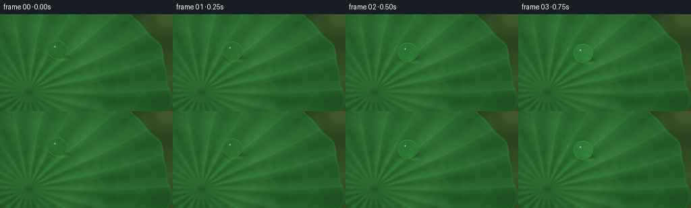
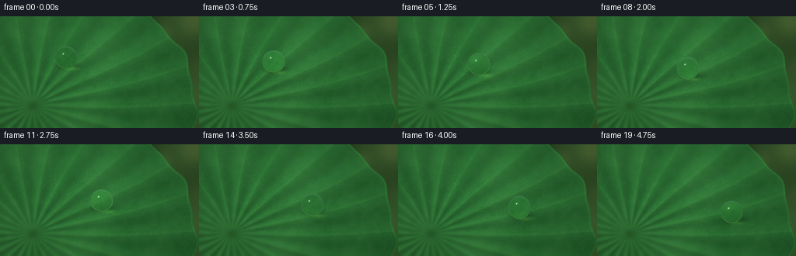
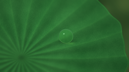

CODING AGENTS AS PIXEL WORLD MODELS
traex/GPT-6.1-Sol · phygen_036
点击播放 · 原生 RGB 像素
逐轮保存的候选
回放视频、检查图与代码变化。
每份候选均可单独播放。实际图片检查记录在下方工具轨迹中。
候选 01播放与检查图
点击播放 · 原生 RGB 像素


展开代码变化
--- 上一保存版本
+++ 本次保存版本
@@ -0,0 +1,204 @@
+from pathlib import Path
+import json
+import numpy as np
+from PIL import Image, ImageDraw, ImageFilter
+import artifact_io
+
+ROOT = Path(__file__).resolve().parent
+SPEC = json.loads((ROOT / 'task_spec.json').read_text())
+W,H=SPEC['width'],SPEC['height']
+S=3
+w,h=W*S,H*S
+rng=np.random.default_rng(3602)
+y,x=np.mgrid[0:h,0:w].astype(float)
+x/=S;y/=S
+
+def noise(scale,seed=0):
+ r=np.random.default_rng(seed)
+ ar=(r.random((max(2,int(h/scale)),max(2,int(w/scale))))*255).astype('uint8')
+ return np.asarray(Image.fromarray(ar).resize((w,h),Image.Resampling.BICUBIC),float)/255-.5
+
+def blur(a,r):
+ return np.asarray(Image.fromarray(np.uint8(np.clip(a,0,255))).filter(ImageFilter.GaussianBlur(r*S)),float)
+
+def mix(a,b,m):return a*(1-m[...,None])+b*m[...,None]
+
+# Defocused vegetation beyond the circular leaf.
+n1=noise(155,9);n2=noise(75,24)
+bg=np.zeros((h,w,3))+np.array([39.,64.,31.])
+bg+=(n1*49+n2*19)[...,None]*np.array([.7,1,.55])
+for cx,cy,r,col in [(248,7,16,[132,145,74]),(235,128,24,[79,111,46]),(211,20,9,[112,141,77]),(271,64,17,[146,150,83]),(170,-25,21,[107,137,72]),(273,137,8,[191,170,93])]:
+ rr=np.sqrt((x-cx)**2+(y-cy)**2)
+ m=np.exp(-(rr/r)**4)*.24
+ bg=mix(bg,np.broadcast_to(col,bg.shape),m)
+bg=blur(bg,5)
+
+# A shallow, radially pleated lotus lamina. Its junction is at the lower left.
+cx,cy=42.,115.
+dx=x-cx;dy=(y-cy)/.81
+rad=np.sqrt(dx*dx+dy*dy)
+th=np.arctan2(dy,dx)
+edge=210+3.1*np.sin(13*th+.4)+1.4*np.sin(27*th)
+leafmask=np.clip((edge-rad)*S*.55+.5,0,1)
+
+# Branching veins are actual geometry / relief, not a painted leaf outline.
+veinim=Image.new('L',(w,h));vdraw=ImageDraw.Draw(veinim)
+fineim=Image.new('L',(w,h));fdraw=ImageDraw.Draw(fineim)
+
+def pos(r,a):
+ a=a+.026*np.sin(r/51+a*2)
+ return ((cx+r*np.cos(a))*S,(cy+.81*r*np.sin(a))*S)
+
+for j in range(22):
+ a=2*np.pi*j/22+.018*np.sin(j*2)
+ rs=np.linspace(1,214,180)
+ pts=[pos(r,a) for r in rs]
+ vdraw.line(pts,fill=185,width=2*S)
+ # Thin tapering vascular branches split from the midribs.
+ for r0 in range(26,197,18):
+ for sign in [-1,1]:
+ pts=[]
+ for t in np.linspace(0,1,38):
+ r=r0+t*(24+8*r0/200)
+ aa=a+sign*(.12*t+.012*np.sin(t*np.pi))
+ pts.append(pos(r,aa))
+ fdraw.line(pts,fill=125 if r0<90 else 96,width=S)
+ for t0 in [.42,.78]:
+ rr=r0+t0*30
+ aa=a+sign*.12*t0
+ pp=[pos(rr+z*16,aa-sign*.054*z) for z in np.linspace(0,1,15)]
+ fdraw.line(pp,fill=62,width=1)
+
+major=np.asarray(veinim,float)/255
+fine=np.asarray(fineim,float)/255
+vsoft=np.asarray(veinim.filter(ImageFilter.GaussianBlur(1.65*S)),float)/255
+fsoft=np.asarray(fineim.filter(ImageFilter.GaussianBlur(.55*S)),float)/255
+# The broad folds and pebbled cuticle catch soft side light.
+phase=22*th-.5*np.sin(rad/51+2*th)
+fold=np.cos(phase)
+low=noise(105,37);mid=noise(23,43);micro=noise(3.1,60)
+height=1.0*np.cos(phase)*(1-np.exp(-rad/40))+.65*vsoft+.16*fsoft+.16*mid+.02*micro
+hy,hx=np.gradient(height,1/S)
+normal=np.stack([-hx,-hy,np.ones_like(x)],axis=-1)
+normal/=np.linalg.norm(normal,axis=-1,keepdims=True)
+light=np.array([-.48,-.5,.72]);light/=np.linalg.norm(light)
+lambert=np.maximum(0,normal@light)
+shade=.63+.46*lambert
+albedo=np.empty((h,w,3))
+albedo[:]=[41,103,48]
+albedo+=(12*low+6*mid)[...,None]*np.array([.8,1,.65])
+albedo+=fold[...,None]*np.array([2.4,5.5,2.6])
+albedo+=(vsoft*.8+major*.36+fsoft*.4)[...,None]*np.array([10,15,6])
+albedo+=micro[...,None]*np.array([5.5,7.5,4.5])
+leaf=albedo*shade[...,None]
+# Natural directional tonal gradients and matte bluish wax bloom.
+glow=np.exp(-((x-88)/105)**2-((y-51)/87)**2)
+leaf+=glow[...,None]*np.array([7,15,8])
+leaf+=np.maximum(0,lambert-.84)[...,None]*np.array([7,9,10])
+hub=np.exp(-(rad/8)**2)
+leaf-=hub[...,None]*np.array([14,29,13])
+# Selective focus follows the plane of the droplet's motion.
+leafsoft=blur(leaf,1.35)
+defocus=np.clip((np.abs(y-(.35*x+27))-23)/55,0,.83)
+leaf=mix(leaf,leafsoft,defocus)
+# Fine edge thickness.
+edgeband=np.exp(-((edge-rad-1.6)/1.3)**2)
+leaf+=edgeband[...,None]*np.array([8,13,4])
+scene=mix(bg,leaf,leafmask)
+
+
+def sample(im,xx,yy):
+ xx=np.clip(xx*S,0,w-1.001);yy=np.clip(yy*S,0,h-1.001)
+ ix=xx.astype(int);iy=yy.astype(int)
+ fx=(xx-ix)[...,None];fy=(yy-iy)[...,None]
+ return (im[iy,ix]*(1-fx)+im[iy,ix+1]*fx)*(1-fy)+(im[iy+1,ix]*(1-fx)+im[iy+1,ix+1]*fx)*fy
+
+def refract(I,N,eta):
+ c=-np.sum(I*N,axis=-1)
+ k=1-eta*eta*(1-c*c)
+ return eta*I+(eta*c-np.sqrt(np.maximum(k,0)))[...,None]*N
+
+def env(v):
+ # Broad open sky, with the reflection of distant dark foliage.
+ u=v[...,0];q=v[...,1];z=v[...,2]
+ sky=np.clip((-q+.45)/1.15,0,1)
+ e=np.zeros_like(v)+[30,62,27]
+ e=mix(e,np.zeros_like(v)+[154,183,188],sky)
+ trees=(.5+.5*np.sin(u*17+q*9+np.sin(q*23)))*(.5+.5*np.sin(z*12-u*7))
+ tree_mask=np.clip((trees-.45)*2,0,.72)*np.clip((q+.45)*1.7,0,1)
+ e*=1-tree_mask[...,None]
+ # Sun softened by bright sky, rendered as curved reflected highlights.
+ L=np.array([-.48,-.6,.64]);L/=np.linalg.norm(L)
+ dot=np.sum(v*L,axis=-1)
+ e+=np.exp((dot-1)/.029)[...,None]*np.array([135,137,129])
+ e+=np.exp((dot-1)/.0028)[...,None]*np.array([255,248,224])
+ L2=np.array([.34,-.87,.36]);L2/=np.linalg.norm(L2)
+ e+=np.exp((np.sum(v*L2,axis=-1)-1)/.009)[...,None]*np.array([71,82,76])
+ return e
+
+frames=[]
+for frame in range(SPEC['frames']):
+ t=frame/(SPEC['frames']-1)
+ # A smoothly accelerating slide, with tiny surface-tension oscillations.
+ f=.75*t+.25*t*t
+ px=85+88*f
+ py=53+34*f+1.7*np.sin(np.pi*t)
+ radius=14.5
+ ax=1+.025*np.sin(t*4*np.pi)
+ ay=1-.016*np.sin(t*4*np.pi)
+ im=scene.copy()
+ # Soft cast shadow and a small warm refractive caustic.
+ shadow=np.exp(-((x-(px+3))/13.4)**2-((y-(py+10.0))/4.1)**2)
+ im*=1-.33*shadow[...,None]
+ caustic=np.exp(-((x-(px+8))/8.5)**2-((y-(py+14.3))/2.4)**2)
+ im+=caustic[...,None]*np.array([18,30,9])
+ contact=np.exp(-((x-px)/7.8)**4-((y-(py+11.0))/.8)**2)
+ im*=1-.25*contact[...,None]
+ # Analytical sphere intersections and two air/water refractions.
+ X=(x-px)/ax;Y=(y-py)/ay
+ rr=(X*X+Y*Y)/(radius*radius)
+ valid=rr<1
+ nz=np.sqrt(np.maximum(0,1-rr))
+ N=np.stack([X/radius,Y/radius,nz],axis=-1)
+ N/=np.maximum(np.linalg.norm(N,axis=-1,keepdims=True),1e-9)
+ I=np.zeros_like(N);I[...,2]=-1
+ T=refract(I,N,1/1.333)
+ zc=(radius*.96-6)/.8
+ P=np.stack([x,y,zc+radius*nz],axis=-1)
+ dist=-2*radius*np.sum(N*T,axis=-1)
+ Q=P+dist[...,None]*T
+ C=np.array([px,py,zc])
+ exitN=(Q-C)/radius
+ exitN/=np.maximum(np.linalg.norm(exitN,axis=-1,keepdims=True),1e-9)
+ Tout=refract(T,-exitN,1.333)
+ plane=np.array([0,-.6,.8])
+ base=np.array([px,py+10,0])
+ denom=Tout@plane
+ dist2=((base-Q)@plane)/np.minimum(denom,-.0001)
+ ground=Q+dist2[...,None]*Tout
+ transmit=sample(scene,ground[...,0],ground[...,1])
+ # Mild absorption, brightness from the bright surroundings, genuine magnified veins.
+ transmit=transmit*np.array([.94,1.035,.94])+np.array([1.8,3.2,1.9])
+ reflect=I+2*nz[...,None]*N
+ fresnel=.0204+.9796*(1-nz)**5
+ col=mix(transmit,env(reflect),fresnel)
+ # The sky has a small intense sun image in the front surface, even at low Fresnel.
+ lightdir=np.array([-.48,-.6,.64]);lightdir/=np.linalg.norm(lightdir)
+ spec=np.exp(((reflect@lightdir)-1)/.004)
+ col+=spec[...,None]*np.array([218,218,201])
+ broad=np.exp(((reflect@lightdir)-1)/.037)
+ col+=broad[...,None]*np.array([13,16,14])
+ # A slender rim and low reflected green light define clear water, not a solid bead.
+ rim=np.exp(-((np.sqrt(np.maximum(rr,0))-.963)/.024)**2)
+ lower=np.clip((Y/radius+.1),0,1)
+ col+= (rim*lower)[...,None]*np.array([27,44,22])
+ alpha=np.clip((1-np.sqrt(rr))*radius*S+.35,0,1)
+ alpha*=valid
+ im=mix(im,col,alpha)
+ vignette=np.clip(1-.12*((x-129)/170)**2-.09*((y-66)/110)**2,.78,1)
+ im*=vignette[...,None]
+ out=Image.fromarray(np.uint8(np.clip(im,0,255))).resize((W,H),Image.Resampling.LANCZOS)
+ frames.append(np.asarray(out))
+
+artifact_io.save(np.stack(frames),ROOT)
+print('Saved',len(frames),'RGB frames.')
候选 02播放与检查图
点击播放 · 原生 RGB 像素

展开代码变化
--- 上一保存版本
+++ 本次保存版本
@@ -74,7 +74,7 @@
vsoft=np.asarray(veinim.filter(ImageFilter.GaussianBlur(1.65*S)),float)/255
fsoft=np.asarray(fineim.filter(ImageFilter.GaussianBlur(.55*S)),float)/255
# The broad folds and pebbled cuticle catch soft side light.
-phase=22*th-.5*np.sin(rad/51+2*th)
+phase=22*th-.5*np.sin(rad/51+2*th)+.18*np.sin(7*th)
fold=np.cos(phase)
low=noise(105,37);mid=noise(23,43);micro=noise(3.1,60)
height=1.0*np.cos(phase)*(1-np.exp(-rad/40))+.65*vsoft+.16*fsoft+.16*mid+.02*micro
@@ -85,12 +85,13 @@
lambert=np.maximum(0,normal@light)
shade=.63+.46*lambert
albedo=np.empty((h,w,3))
-albedo[:]=[41,103,48]
+albedo[:]=[46,110,51]
albedo+=(12*low+6*mid)[...,None]*np.array([.8,1,.65])
albedo+=fold[...,None]*np.array([2.4,5.5,2.6])
-albedo+=(vsoft*.8+major*.36+fsoft*.4)[...,None]*np.array([10,15,6])
+albedo+=(vsoft*.8+major*.36+fsoft*1.6+fine*.4)[...,None]*np.array([10,15,6])
albedo+=micro[...,None]*np.array([5.5,7.5,4.5])
leaf=albedo*shade[...,None]
+leaf-=np.roll(fsoft,2*S,axis=0)[...,None]*np.array([2,4,1.5])
# Natural directional tonal gradients and matte bluish wax bloom.
glow=np.exp(-((x-88)/105)**2-((y-51)/87)**2)
leaf+=glow[...,None]*np.array([7,15,8])
@@ -143,16 +144,16 @@
f=.75*t+.25*t*t
px=85+88*f
py=53+34*f+1.7*np.sin(np.pi*t)
- radius=14.5
+ radius=16.6
ax=1+.025*np.sin(t*4*np.pi)
ay=1-.016*np.sin(t*4*np.pi)
im=scene.copy()
# Soft cast shadow and a small warm refractive caustic.
- shadow=np.exp(-((x-(px+3))/13.4)**2-((y-(py+10.0))/4.1)**2)
- im*=1-.33*shadow[...,None]
+ shadow=np.exp(-((x-(px+3))/14.8)**2-((y-(py+12.0))/4.5)**2)
+ im*=1-.40*shadow[...,None]
caustic=np.exp(-((x-(px+8))/8.5)**2-((y-(py+14.3))/2.4)**2)
im+=caustic[...,None]*np.array([18,30,9])
- contact=np.exp(-((x-px)/7.8)**4-((y-(py+11.0))/.8)**2)
+ contact=np.exp(-((x-px)/7.8)**4-((y-(py+12.5))/.8)**2)
im*=1-.25*contact[...,None]
# Analytical sphere intersections and two air/water refractions.
X=(x-px)/ax;Y=(y-py)/ay
@@ -187,7 +188,17 @@
spec=np.exp(((reflect@lightdir)-1)/.004)
col+=spec[...,None]*np.array([218,218,201])
broad=np.exp(((reflect@lightdir)-1)/.037)
- col+=broad[...,None]*np.array([13,16,14])
+ col+=broad[...,None]*np.array([63,70,68])
+ # Curved reflection of a broad bright gap in the overhead canopy.
+ nx=X/radius;ny=Y/radius
+ arc=np.exp(-((np.sqrt((nx+.06)**2+(ny+.08)**2)-.73)/.073)**2)
+ arc*=np.exp(-((np.arctan2(ny+.08,nx+.06)+2.14)/.52)**4)
+ col+=arc[...,None]*np.array([130,150,143])
+ softsky=np.exp(-((nx+.34)/.25)**2-((ny+.41)/.17)**2)
+ col+=softsky[...,None]*np.array([48,60,57])
+ # A small bright, refracted underside crescent balances the upper reflection.
+ lowerarc=np.exp(-((np.sqrt(rr)-.91)/.030)**2)*np.exp(-((np.arctan2(ny,nx)-.95)/.48)**2)
+ col+=lowerarc[...,None]*np.array([82,112,69])
# A slender rim and low reflected green light define clear water, not a solid bead.
rim=np.exp(-((np.sqrt(np.maximum(rr,0))-.963)/.024)**2)
lower=np.clip((Y/radius+.1),0,1)
候选 03播放与检查图
可观测工具轨迹
实际执行的命令与返回图片。
命令 1exit 0
/bin/bash -lc 'ls -la && cat prompt.txt && cat GENERATION_RULES.md && cat task_spec.json'
命令 2exit 0
/bin/bash -lc "cat artifact_io.py && python - <<'PY' import numpy,PIL print(numpy.__version__) PY"
命令 3exit 0
/bin/bash -lc "cat > generate.py <<'PY'
from pathlib import Path
import json
import numpy as np
from PIL import Image, ImageDraw, ImageFilter
import artifact_io
ROOT = Path(__file__).resolve().parent
SPEC = json.loads((ROOT / 'task_spec.json').read_text())
W,H=SPEC['width'],SPEC['height']
S=3
w,h=W*S,H*S
rng=np.random.default_rng(3602)
y,x=np.mgrid[0:h,0:w].astype(float)
x/=S;y/=S
def noise(scale,seed=0):
r=np.random.default_rng(seed)
ar=(r.random((max(2,int(h/scale)),max(2,int(w/scale))))*255).astype('uint8')
return np.asarray(Image.fromarray(ar).resize((w,h),Image.Resampling.BICUBIC),float)/255-.5
def blur(a,r):
return np.asarray(Image.fromarray(np.uint8(np.clip(a,0,255))).filter(ImageFilter.GaussianBlur(r*S)),float)
def mix(a,b,m):return a*(1-m[...,None])+b*m[...,None]
# Defocused vegetation beyond the circular leaf.
n1=noise(155,9);n2=noise(75,24)
bg=np.zeros((h,w,3))+np.array([39.,64.,31.])
bg+=(n1*49+n2*19)[...,None]*np.array([.7,1,.55])
for cx,cy,r,col in [(248,7,16,[132,145,74]),(235,128,24,[79,111,46]),(211,20,9,[112,141,77]),(271,64,17,[146,150,83]),(170,-25,21,[107,137,72]),(273,137,8,[191,170,93])]:
rr=np.sqrt((x-cx)**2+(y-cy)**2)
m=np.exp(-(rr/r)**4)*.24
bg=mix(bg,np.broadcast_to(col,bg.shape),m)
bg=blur(bg,5)
# A shallow, radially pleated lotus lamina. Its junction is at the lower left.
cx,cy=42.,115.
dx=x-cx;dy=(y-cy)/.81
rad=np.sqrt(dx*dx+dy*dy)
th=np.arctan2(dy,dx)
edge=210+3.1*np.sin(13*th+.4)+1.4*np.sin(27*th)
leafmask=np.clip((edge-rad)*S*.55+.5,0,1)
# Branching veins are actual geometry / relief, not a painted leaf outline.
veinim=Image.new('L',(w,h));vdraw=ImageDraw.Draw(veinim)
fineim=Image.new('L',(w,h));fdraw=ImageDraw.Draw(fineim)
def pos(r,a):
a=a+.026*np.sin(r/51+a*2)
return ((cx+r*np.cos(a))*S,(cy+.81*r*np.sin(a))*S)
for j in range(22):
a=2*np.pi*j/22+.018*np.sin(j*2)
rs=np.linspace(1,214,180)
pts=[pos(r,a) for r in rs]
vdraw.line(pts,fill=185,width=2*S)
# Thin tapering vascular branches split from the midribs.
for r0 in range(26,197,18):
for sign in [-1,1]:
pts=[]
for t in np.linspace(0,1,38):
r=r0+t*(24+8*r0/200)
aa=a+sign*(.12*t+.012*np.sin(t*np.pi))
pts.append(pos(r,aa))
fdraw.line(pts,fill=125 if r0<90 else 96,width=S)
for t0 in [.42,.78]:
rr=r0+t0*30
aa=a+sign*.12*t0
pp=[pos(rr+z*16,aa-sign*.054*z) for z in np.linspace(0,1,15)]
fdraw.line(pp,fill=62,width=1)
major=np.asarray(veinim,float)/255
fine=np.asarray(fineim,float)/255
vsoft=np.asarray(veinim.filter(ImageFilter.GaussianBlur(1.65*S)),float)/255
fsoft=np.asarray(fineim.filter(ImageFilter.GaussianBlur(.55*S)),float)/255
# The broad folds and pebbled cuticle catch soft side light.
phase=22*th-.5*np.sin(rad/51+2*th)
fold=np.cos(phase)
low=noise(105,37);mid=noise(23,43);micro=noise(3.1,60)
height=1.0*np.cos(phase)*(1-np.exp(-rad/40))+.65*vsoft+.16*fsoft+.16*mid+.02*micro
hy,hx=np.gradient(height,1/S)
normal=np.stack([-hx,-hy,np.ones_like(x)],axis=-1)
normal/=np.linalg.norm(normal,axis=-1,keepdims=True)
light=np.array([-.48,-.5,.72]);light/=np.linalg.norm(light)
lambert=np.maximum(0,normal@light)
shade=.63+.46*lambert
albedo=np.empty((h,w,3))
albedo[:]=[41,103,48]
albedo+=(12*low+6*mid)[...,None]*np.array([.8,1,.65])
albedo+=fold[...,None]*np.array([2.4,5.5,2.6])
albedo+=(vsoft*.8+major*.36+fsoft*.4)[...,None]*np.array([10,15,6])
albedo+=micro[...,None]*np.array([5.5,7.5,4.5])
leaf=albedo*shade[...,None]
# Natural directional tonal gradients and matte bluish wax bloom.
glow=np.exp(-((x-88)/105)**2-((y-51)/87)**2)
leaf+=glow[...,None]*np.array([7,15,8])
leaf+=np.maximum(0,lambert-.84)[...,None]*np.array([7,9,10])
hub=np.exp(-(rad/8)**2)
leaf-=hub[...,None]*np.array([14,29,13])
# Selective focus follows the plane of the droplet's motion.
leafsoft=blur(leaf,1.35)
defocus=np.clip((np.abs(y-(.35*x+27))-23)/55,0,.83)
leaf=mix(leaf,leafsoft,defocus)
# Fine edge thickness.
edgeband=np.exp(-((edge-rad-1.6)/1.3)**2)
leaf+=edgeband[...,None]*np.array([8,13,4])
scene=mix(bg,leaf,leafmask)
def sample(im,xx,yy):
xx=np.clip(xx*S,0,w-1.001);yy=np.clip(yy*S,0,h-1.001)
ix=xx.astype(int);iy=yy.astype(int)
fx=(xx-ix)[...,None];fy=(yy-iy)[...,None]
return (im[iy,ix]*(1-fx)+im[iy,ix+1]*fx)*(1-fy)+(im[iy+1,ix]*(1-fx)+im[iy+1,ix+1]*fx)*fy
def refract(I,N,eta):
c=-np.sum(I*N,axis=-1)
k=1-eta*eta*(1-c*c)
return eta*I+(eta*c-np.sqrt(np.maximum(k,0)))[...,None]*N
def env(v):
# Broad open sky, with the reflection of distant dark foliage.
u=v[...,0];q=v[...,1];z=v[...,2]
sky=np.clip((-q+.45)/1.15,0,1)
e=np.zeros_like(v)+[30,62,27]
e=mix(e,np.zeros_like(v)+[154,183,188],sky)
trees=(.5+.5*np.sin(u*17+q*9+np.sin(q*23)))*(.5+.5*np.sin(z*12-u*7))
tree_mask=np.clip((trees-.45)*2,0,.72)*np.clip((q+.45)*1.7,0,1)
e*=1-tree_mask[...,None]
# Sun softened by bright sky, rendered as curved reflected highlights.
L=np.array([-.48,-.6,.64]);L/=np.linalg.norm(L)
dot=np.sum(v*L,axis=-1)
e+=np.exp((dot-1)/.029)[...,None]*np.array([135,137,129])
e+=np.exp((dot-1)/.0028)[...,None]*np.array([255,248,224])
L2=np.array([.34,-.87,.36]);L2/=np.linalg.norm(L2)
e+=np.exp((np.sum(v*L2,axis=-1)-1)/.009)[...,None]*np.array([71,82,76])
return e
frames=[]
for frame in range(SPEC['frames']):
t=frame/(SPEC['frames']-1)
# A smoothly accelerating slide, with tiny surface-tension oscillations.
f=.75*t+.25*t*t
px=85+88*f
py=53+34*f+1.7*np.sin(np.pi*t)
radius=14.5
ax=1+.025*np.sin(t*4*np.pi)
ay=1-.016*np.sin(t*4*np.pi)
im=scene.copy()
# Soft cast shadow and a small warm refractive caustic.
shadow=np.exp(-((x-(px+3))/13.4)**2-((y-(py+10.0))/4.1)**2)
im*=1-.33*shadow[...,None]
caustic=np.exp(-((x-(px+8))/8.5)**2-((y-(py+14.3))/2.4)**2)
im+=caustic[...,None]*np.array([18,30,9])
contact=np.exp(-((x-px)/7.8)**4-((y-(py+11.0))/.8)**2)
im*=1-.25*contact[...,None]
# Analytical sphere intersections and two air/water refractions.
X=(x-px)/ax;Y=(y-py)/ay
rr=(X*X+Y*Y)/(radius*radius)
valid=rr<1
nz=np.sqrt(np.maximum(0,1-rr))
N=np.stack([X/radius,Y/radius,nz],axis=-1)
N/=np.maximum(np.linalg.norm(N,axis=-1,keepdims=True),1e-9)
I=np.zeros_like(N);I[...,2]=-1
T=refract(I,N,1/1.333)
zc=(radius*.96-6)/.8
P=np.stack([x,y,zc+radius*nz],axis=-1)
dist=-2*radius*np.sum(N*T,axis=-1)
Q=P+dist[...,None]*T
C=np.array([px,py,zc])
exitN=(Q-C)/radius
exitN/=np.maximum(np.linalg.norm(exitN,axis=-1,keepdims=True),1e-9)
Tout=refract(T,-exitN,1.333)
plane=np.array([0,-.6,.8])
base=np.array([px,py+10,0])
denom=Tout@plane
dist2=((base-Q)@plane)/np.minimum(denom,-.0001)
ground=Q+dist2[...,None]*Tout
transmit=sample(scene,ground[...,0],ground[...,1])
# Mild absorption, brightness from the bright surroundings, genuine magnified veins.
transmit=transmit*np.array([.94,1.035,.94])+np.array([1.8,3.2,1.9])
reflect=I+2*nz[...,None]*N
fresnel=.0204+.9796*(1-nz)**5
col=mix(transmit,env(reflect),fresnel)
# The sky has a small intense sun image in the front surface, even at low Fresnel.
lightdir=np.array([-.48,-.6,.64]);lightdir/=np.linalg.norm(lightdir)
spec=np.exp(((reflect@lightdir)-1)/.004)
col+=spec[...,None]*np.array([218,218,201])
broad=np.exp(((reflect@lightdir)-1)/.037)
col+=broad[...,None]*np.array([13,16,14])
# A slender rim and low reflected green light define clear water, not a solid bead.
rim=np.exp(-((np.sqrt(np.maximum(rr,0))-.963)/.024)**2)
lower=np.clip((Y/radius+.1),0,1)
col+= (rim*lower)[...,None]*np.array([27,44,22])
alpha=np.clip((1-np.sqrt(rr))*radius*S+.35,0,1)
alpha*=valid
im=mix(im,col,alpha)
vignette=np.clip(1-.12*((x-129)/170)**2-.09*((y-66)/110)**2,.78,1)
im*=vignette[...,None]
out=Image.fromarray(np.uint8(np.clip(im,0,255))).resize((W,H),Image.Resampling.LANCZOS)
frames.append(np.asarray(out))
artifact_io.save(np.stack(frames),ROOT)
print('Saved',len(frames),'RGB frames.')
PY
python generate.py"命令 4exit 0
/bin/bash -lc "python - <<'PY'
p='generate.py'
s=open(p).read().replace('phase=22*th-.5*np.sin(rad/51+2*th)','phase=22*th-.5*np.sin(rad/51+2*th)+.18*np.sin(7*th)')
s=s.replace('albedo[:]=[41,103,48]','albedo[:]=[46,110,51]')
s=s.replace('(vsoft*.8+major*.36+fsoft*.4)','(vsoft*.8+major*.36+fsoft*1.6+fine*.4)')
s=s.replace('leaf=albedo*shade[...,None]','leaf=albedo*shade[...,None]\\nleaf-=np.roll(fsoft,2*S,axis=0)[...,None]*np.array([2,4,1.5])')
s=s.replace('radius=14.5','radius=16.6')
s=s.replace('shadow=np.exp(-((x-(px+3))/13.4)**2-((y-(py+10.0))/4.1)**2)','shadow=np.exp(-((x-(px+3))/14.8)**2-((y-(py+12.0))/4.5)**2)')
s=s.replace('1-.33*shadow','1-.40*shadow').replace('(py+11.0))/.8','(py+12.5))/.8')
s=s.replace('col+=broad[...,None]*np.array([13,16,14])','''col+=broad[...,None]*np.array([63,70,68])
# Curved reflection of a broad bright gap in the overhead canopy.
nx=X/radius;ny=Y/radius
arc=np.exp(-((np.sqrt((nx+.06)**2+(ny+.08)**2)-.73)/.073)**2)
arc*=np.exp(-((np.arctan2(ny+.08,nx+.06)+2.14)/.52)**4)
col+=arc[...,None]*np.array([130,150,143])
softsky=np.exp(-((nx+.34)/.25)**2-((ny+.41)/.17)**2)
col+=softsky[...,None]*np.array([48,60,57])
# A small bright, refracted underside crescent balances the upper reflection.
lowerarc=np.exp(-((np.sqrt(rr)-.91)/.030)**2)*np.exp(-((np.arctan2(ny,nx)-.95)/.48)**2)
col+=lowerarc[...,None]*np.array([82,112,69])''')
open(p,'w').write(s)
PY
python generate.py"命令 5exit 0
/bin/bash -lc 'command -v ffmpeg || true; ls -lh pixels.npz index.html generate.py'
视觉工具实际返回图片 1

视觉工具实际返回图片 2

视觉工具实际返回图片 3

保存候选 3 份；完成命令 5 次；可验证图片返回 3 张。原始 API 响应与完整日志保留在本地。